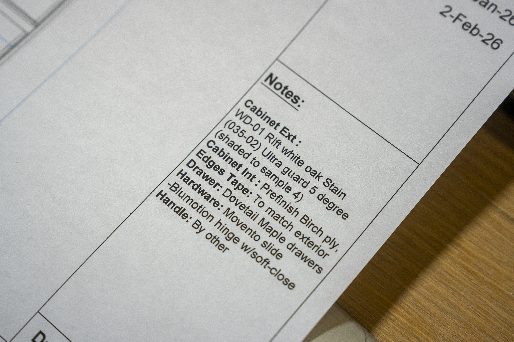

How Radius shows up in print, screen, and on the bench.
A working brand system — wordmark, colour palette, type hierarchy, drafting grid, photography treatment, and Rick's voice. Built from the May 2026 content system and the editorial register established for architects, designers, and luxury-home owners.
IssuedMay 2026
Versionv1.0
ForRick Wilson · Owner + Master Joiner
AudienceArchitects · Designers · Owners
PagesOne · long-form
01
The brand in one paragraph.
Radius makes custom architectural millwork in Burnaby, BC. Twenty-five years on the bench. Twenty craftspeople, half European-trained. Zero CNC. Drawings, cuts, finishing, install support — all under one roof.
What we promise visually.
Radius is a working shop, not a marketing studio. The brand reads like the drawings the architect ships us: paper-pale, dimensionally precise, hairline-ruled, and red where it matters. No stock photography. No generic "luxury." No words Rick wouldn't say at the bench.
What this guide is for.
So that anyone working on a Radius asset — a social post, a one-pager, a proposal cover, an email signature — can produce something on-brand without guessing. The system is opinionated by design: pick from the palette below, use the type hierarchy as written, follow Rick's voice rules, ship.
02
Wordmark · RADIUS
The wordmark is a fixed asset — supplied as PNG with both the RADIUS Cinzel-style mark and the "ARCHITECTURAL MILLWORK" lockup line. Use the file, don't re-typeset it.
The full lockup on paper · The same mark inverted for ink backgrounds. Two acceptable lockups. Source file: brand/radius-logo.png
Rules
Letter-spacing is always +0.18em. Never tighter.
Weight is Cinzel SemiBold (600). Never Regular, never Bold.
Colour on paper background: #A82838 (Radius Red).
Colour on dark/ink background: #FAFAF5 (Paper). Never red-on-ink — too vibrating.
Minimum size in print: 14pt. On screen: 16px. Smaller than that, the spacing breaks down.
Clear space on every side equals the height of the cap "R."
The recurring brand block
On slides, the wordmark pairs with a single descriptor line in IBM Plex Mono. Used in the lower-left of carousel slides.
RADIUS
Architectural Millwork
03
Colour · seven values.
A small palette by choice. Red is the only saturated colour in the system — everything else is paper, ink, or earth tones. The drafting-grid aesthetic depends on this restraint.
Radius Red
The single saturated colour. Wordmark, accents, callouts, eyebrows, hairline rules where signal is needed.
Use: Headlines, slide titles, quote pull-outs, section openers
Style: Italic primarily · roman for occasional anchor word
Italics carry the warmth — the architectural counterpoint to the technical monospace
Pair with Red for the second clause: title-em pattern
03 · Inter · Body copy.
Solid Eastern maple. Pin-and-tail dovetail, traditional cut. No fasteners — the geometry of the joint is what holds it. Twenty hours per drawer. Material is the cheap part — about thirty dollars in wood.
Use: All body copy · captions · paragraph text · metadata
Sizes: 0.85rem (small), 1rem (default), 1.08rem (lede)
Weights: 300, 400, 500 · never 600+ in body
Line-height: 1.6 minimum, 1.75 preferred for long-form
04 · IBM Plex Mono · Technical labels.
Burnaby · BC · Twenty-Five Years
Use: Eyebrow labels · page indicators · technical specs · metadata strong-tags · footers
Size: 0.55rem – 0.85rem
Letter-spacing: 0.18em – 0.4em · always uppercase
Weight: 400 or 500
Colour: Red for eyebrows · Ink or Gray elsewhere
05
The drafting grid · quiet texture.
Every Radius surface — slide, page, proposal — carries a subtle architectural grid. References the architect's drawing set. Sits under content, never on top. Loud grids fight the type; ours is whisper-quiet.
Specifications
Minor grid: 27px squares · 1px hairlines at 2.5% opacity ink
Major grid: 135px squares · 1px hairlines at 18% opacity ink
On a 1080×1350 slide that's 40×50 minor cells, 8×10 major cells
The peach band sits in the top 14px — above the grid
The brand block + page indicator sit at the bottom — above the grid
Live example
A 4:5 slide canvas with the full chrome: peach band top, drafting grid behind, brand block bottom-left, page indicator bottom-right, italic display centred.
"Flush can look flush, but is it flush?"
03 / 05
RADIUS
Architectural Millwork
06
Slide system · eight templates.
Every Instagram carousel is built from these eight. They're not free-form — pick from the set, fill it with content, ship. The constraint is what makes the feed feel like one shop talking, not a portfolio of unrelated posts.
01 · Cover Dark
Photo background + ink-gradient overlay. Eyebrow + italic title + subtitle + footer. The carousel opener.
Ebonised reveal carried clean through the corner — sycamore-pale carcass
Drawings · Horizontal
Radius shop drawing · OGR Primary Ensuite, forty-three-sheet set

Drawings · Horizontal
Finish notes · WD-01 rift white oak, dovetail maple drawers, Blumotion soft-close
People · Vertical
Sydney at the bench · Radius tee, tape on the belt, drawer-box work
Finishing · Horizontal
JC at the cup gun · conversion-varnish pass on a primed panel
Rules
No stock photography. Ever. Even for placeholders. Radius shows up with its own frames or not at all.
4:5 portrait for IG carousel native. Horizontals get cropped — choose horizontals knowing this.
Warm cast in colour grade. The shop has warm light; don't neutralise it.
Available light when possible. The finishing-room frames are an exception — keep the booth's softboxes visible.
Photo bank: 62 frames organised at photo-bank.html. Surface unused ones before recycling.
08
Voice · Rick at the bench.
The voice is Rick's. Specific, material-literate, matter-of-fact. Self-deprecating about scale, unsentimental about craft, direct in address. No corporate words. Numbers when they matter. Always concrete.
The cadence
Short sentences
"Sixty drawer boxes. One Whistler house. Solid Eastern maple."
Then one ruminative line
"You're not paying for wood. You're paying for hours that won't come back."
Material specificity
Never "wood" — always solid Eastern maple, slip-matched, rift white oak, fumed European oak.
Numbers when meaningful
"Twenty-five years. Twenty craftspeople. Five thousand square feet. Zero CNC."
Self-deprecating
"We grew to twenty-three people once. The work didn't get better. My sleep got worse."
Direct address
"What your set needs to make the saw move."
Vulnerable when earned
"If the install crew is calling at eleven at night, we've already failed."
differentiator · value proposition · ROI best-in-class · world-class · second-to-none premier · premium · elevated bespoke · artisanal · handcrafted luxury (generic — say estate-scale or name the project) beautiful · stunning · gorgeous · amazing passion · journey · quality (bare) solutions · synergy · leverage
The "Rick filter"
Before publishing any caption, read it aloud. If it doesn't sound like Rick at the bench — if it sounds like a marketing person trying to sound like Rick — rewrite. The test isn't elegance, it's recognition.
09
A post in practice.
Worked example — how the system produces a single Instagram carousel from cover to caption. All the rules above, applied at once.
Post 01 · From drawing to drawer.
01 · Drawing
Native horizontal · OGR plan view
02 · Photo
Vertical · pin-and-tail dovetail close
03 · Quote
Heirloom quote · dovetail photo behind
04 · Number
60 drawer boxes · the closing fact
The caption
Sixty drawer boxes. One Whistler house.
Solid Eastern maple. Pin-and-tail dovetail, traditional cut. No fasteners — the geometry of the joint is what holds it.
"It's an heirloom-quality drawer. A hundred years from now it'll still be tight."
— Rick Wilson, Owner + Master Joiner
Photography @mattanthonyphoto